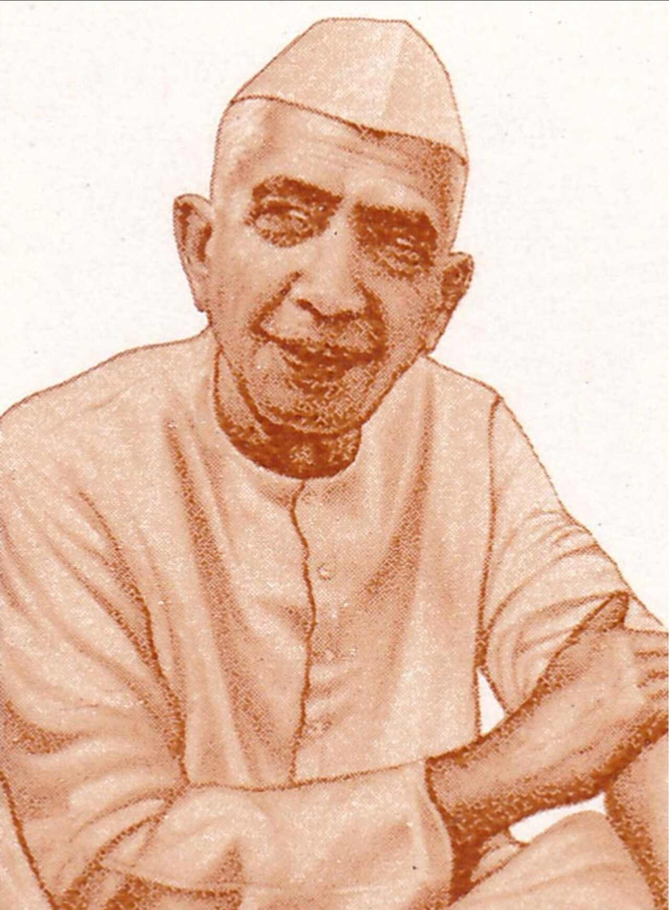

23 दिसंबर 2026 · चौधरी चरण सिंह जयंती · राष्ट्रीय किसान दिवस
किसान संकल्प 23
नशामुक्त परिवार, समृद्ध किसान। अन्नदाता का संकल्प, नशे की सामाजिक स्वीकृति के विरुद्ध।

लोकसंकल्प प्रस्तुत करता है
एक दिवसीय स्वैच्छिक उपवास एवं सामुदायिक संकल्प
चौधरी चरण सिंह जी को समर्पित किसान दिवस पर अन्नदाता के सम्मान को परिवार की ख़ुशहाली के संकल्प से जोड़ें। नशीले पदार्थों को आतिथ्य, प्रतिष्ठा, मेलजोल और सामाजिक आयोजनों का अनिवार्य हिस्सा मानने की प्रथा बदलें।
अपने परिवार और समुदाय के साथ एक दिन का स्वैच्छिक उपवास रखें तथा रोज़मर्रा के व्यवहार में बदलाव का संकल्प लें।
नशामुक्त परिवार, समृद्ध किसान।
20 नवंबर 2026
पंजीकरण का शुभारंभ
देव जसनाथ जी के अवतरण दिवस पर 20 नवंबर 2026 को अवतार स्थल डाबला तालाब के रात्रि जागरण से किसान संकल्प 23 के पंजीकरण का शुभारंभ हुआ।
23 दिसंबर को आप जहाँ हैं, वहीं से किसान परिवारों और समाज की ख़ुशहाली के इस संकल्प में सहभागी बनें।
देव जसनाथ जी
अवतरण दिवस पर पंजीकरण की शुरुआत क्यों
मध्यकाल के महान पर्यावरण चिंतक, दार्शनिक और धर्म प्रवर्तक देव जसनाथ जी ने पर्यावरण संरक्षण के साथ साथ नशा मुक्ति हेतु महत्वपूर्ण शिक्षाएँ दी थीं, जिनके कारण एक लंबे अरसे तक ग्रामीण तबका नशे की गिरफ़्त से दूर रहा।
लेकिन पिछले कुछ सालों से नशे ने हमारे गाँवों में फिर से पाँव पसारना शुरू कर दिया है।
देव जसनाथ जी के अवतरण दिवस पर हम किसान संकल्प 23 की शुरुआत करके जसनाथ जी की शिक्षाओं को फिर से याद दिलाना चाहते हैं।
यह अभियान क्यों
गाँव की ख़ुशहाली का रास्ता
पिछले कुछ सालों में जिस तरह नशे की लत ने ग्रामीणों को अपनी गिरफ़्त में लिया है, उससे ग्रामीण पारिवारिक, सामाजिक और आर्थिक ताना-बाना बिगड़ने लगा है।
चौधरी चरण सिंह जी का प्रसिद्ध कथन है कि भारत की ख़ुशहाली का रास्ता गाँवों से होकर गुज़रता है। लेकिन गाँव की ख़ुशहाली के लिए हमें उन्हें नशे के दानव से बचाना होगा।
इसीलिए नशे पर ख़र्च, इसके शारीरिक, मानसिक, पारिवारिक और आर्थिक-सामाजिक नुक़सान तथा नशीले पदार्थों की सामाजिक मनुहार पर खुलकर बात करनी होगी। किसान दिवस पर एक दिन का उपवास इसी बातचीत को आगे बढ़ाने का एक सामूहिक प्रयास है।
हमारे पाँच साझा संकल्प
जो हम सब मिलकर तय करते हैं
- नशीले पदार्थों को सम्मान, प्रतिष्ठा या अतिथि सत्कार का प्रतीक नहीं बनाएँगे।
- अपने घर और सामाजिक आयोजनों में नशीले पदार्थ नहीं परोसेंगे और सेवन की मनुहार नहीं करेंगे।
- बच्चों और युवाओं के सामने नशे का महिमामंडन नहीं करेंगे; परिवार में विश्वासपूर्ण संवाद और अच्छा उदाहरण देंगे।
- मतदान को प्रभावित करने के लिए दिए जाने वाले नशीले पदार्थ स्वीकार या वितरित नहीं करेंगे।
- नशा छोड़ने में सहायता चाहने वाले व्यक्ति का सम्मान करेंगे और उसे उपयुक्त सहायता से जुड़ने के लिए प्रोत्साहित करेंगे।
सहभागिता
कौन जुड़ सकता है
किसान, खेती से जुड़े श्रमिक, महिलाएँ, शिक्षक, विद्यार्थी, युवा, स्वयंसेवक तथा किसान परिवारों की ख़ुशहाली में सहभागी हर नागरिक। किसान होना पंजीकरण की अनिवार्य शर्त नहीं है।
उपवास स्वैच्छिक है और व्यक्तिगत स्वास्थ्य के अनुकूल ही चुना जाए। उपवास न रखने वाले व्यक्ति भी समान सम्मान से संकल्प, संवाद और आयोजन सहयोग द्वारा जुड़ सकते हैं।
अपनी सहभागिता का विकल्प चुनें और विवरण दर्ज करें। परिवार या गाँव में संवाद करके 23 दिसंबर की तैयारी करें। उस दिन स्वास्थ्य के अनुरूप स्वैच्छिक उपवास या संकल्प-सहयोग से जुड़ें।
पंजीकरण
किसान संकल्प 23 में अपना पंजीकरण करें
यह 23 दिसंबर 2026 की सहभागिता का पंजीकरण है।
पंजीकरण अभी खुला नहीं है
फ़ॉर्म 20 नवंबर 2026 को यहीं खुल जाएगा।
23 दिसंबर का आयोजन संपन्न हो चुका है
इसलिए नया पंजीकरण अब नहीं लिया जा रहा। जिन्होंने पंजीकरण कराया था, उनकी गिनती नीचे दर्ज है।
मैं किसान संकल्प 23 से स्वेच्छा से जुड़ते हुए नशे की सामाजिक स्वीकृति बदलने, परिवार में सकारात्मक संवाद बढ़ाने और अपने व्यवहार से अच्छा उदाहरण देने का संकल्प लेता / लेती हूँ।
आपका पंजीकरण दर्ज हो गया।
आपका पंजीकरण क्रमांक :
नीचे आपका प्रमाण-पत्र है। इसे डाउनलोड कीजिए और अपने गाँव तथा परिचितों तक यह संदेश पहुँचाइए।
डिजिटल प्रमाण-पत्र
किसान संकल्प 23
राष्ट्रीय किसान दिवस, 23 दिसंबर 2026
यह प्रमाणित किया जाता है कि
आपका नामने चौधरी चरण सिंह जी की जयंती एवं राष्ट्रीय किसान दिवस पर एक दिवसीय स्वैच्छिक उपवास एवं सामुदायिक संकल्प में सहभागिता दर्ज कराकर नशे और उसकी सामाजिक स्वीकृति के विरुद्ध संचालित ‘लोकसंकल्प’ जन-अभियान को मजबूती प्रदान की है।
नई किरण नशा मुक्ति केंद्र, राजकीय डूंगर महाविद्यालय, बीकानेर आपकी इस सामाजिक प्रतिबद्धता के लिए हार्दिक आभार व्यक्त करता है तथा अपेक्षा करता है कि आप अधिकाधिक लोगों को इस जन-अभियान से जोड़कर नशा मुक्त समाज के निर्माण में सहभागी बनेंगे।
“नशामुक्त परिवार, समृद्ध किसान”
नशा मुक्त भारत अभियान के अंतर्गत
नई किरण नशा मुक्ति केंद्र
राजकीय डूंगर महाविद्यालय, बीकानेर
लोकसंकल्प : नशे की सामाजिक स्वीकृति के विरुद्ध जन-अभियान
दिनांक आज
पंजीकरण क्रमांक :
नशामुक्त परिवार, समृद्ध किसान।
फेसबुक और X पर तस्वीर अपने आप नहीं जाती। पहले PDF डाउनलोड कीजिए, फिर पोस्ट में जोड़ लीजिए। फ़ोन पर “साझा करें” से प्रमाण-पत्र सीधा भेजा जा सकता है।
गाँव या संस्था
अपने आयोजन की सूचना दीजिए
अपने गाँव, वार्ड या संस्था में 23 दिसंबर को प्रस्तावित सामूहिक उपवास, संकल्प सभा या संवाद की सूचना दें।
यह आयोजन-सूचना है, पंजीकरण नहीं। इससे पूरे गाँव के सभी निवासी व्यक्तिगत संकल्प लेने वाले नहीं माने जाएँगे। दोनों गिनतियाँ अलग अलग दिखाई जाती हैं और कभी जोड़ी नहीं जातीं।
सूचना फ़ॉर्म अभी खुला नहीं है
यह 20 नवंबर 2026 को यहीं खुल जाएगा।
23 दिसंबर का आयोजन संपन्न हो चुका है
नई आयोजन सूचना अब नहीं ली जा रही।
आपके आयोजन की सूचना दर्ज है।
सूचना क्रमांक :
इसे व्यक्तिगत पंजीकरणों से अलग रखा जाएगा। 23 दिसंबर के बाद वास्तविक सहभागिता की रिपोर्ट भेजने का विकल्प उपलब्ध कराया जाएगा।
स्थानीय ज़िम्मेदारी
एक संयोजक और संपर्क टीम तय करें। नशामुक्त जीवन के अच्छे व्यक्तिगत उदाहरण और स्थानीय विश्वास वाले लोगों को नेतृत्व दें। महिलाओं, शिक्षकों, युवाओं और सम्मानित स्थानीय व्यक्तियों को संवाद में अवसर दें।
उपवास से व्यवहार तक
एक दिन के बाद क्या
एक दिन का उपवास हमारे संकल्प की अभिव्यक्ति है। इसका अगला क़दम रोज़मर्रा में दिखाई देना चाहिए :
- अगले पारिवारिक आयोजन में नशीले पदार्थ न परोसना।
- बच्चों से संवाद करना।
- गाँव में स्वैच्छिक संकल्प सभा आयोजित करना।
23 दिसंबर 2026
किसान संकल्प 23 में कितने जुड़े
ये वेबसाइट पर आए पंजीकरण हैं। गिनती सीधे पंजीकरण की सूची से आती है।
आयोजन सूचना में लिखी अपेक्षित सहभागियों की संख्याएँ अनुमान हैं, इसलिए ऊपर की गिनती में नहीं जोड़ी जातीं।
आम प्रश्न
जो अक्सर पूछा जाता है
क्या केवल किसान जुड़ सकते हैं?
नहीं। किसान परिवारों की ख़ुशहाली और नशे की सामाजिक स्वीकृति में बदलाव के लिए हर नागरिक जुड़ सकता है।
मेरी जानकारी कौन देखेगा?
नाम, संपर्क और स्थान का उपयोग आयोजन समन्वय तथा संबंधित संपर्क के लिए किया जाएगा। मोबाइल नंबर सार्वजनिक नहीं होगा। सार्वजनिक सूची में नाम और स्थान दिखाने के लिए अलग वैकल्पिक सहमति ली जाती है। संशोधन या हटाने का अनुरोध info@loksankalp.org पर भेजिए।
उपवास न रख पाऊँ तो?
उपवास स्वैच्छिक है और व्यक्तिगत स्वास्थ्य के अनुकूल ही चुना जाए। उपवास न रखने वाले व्यक्ति भी समान सम्मान से संकल्प, संवाद और आयोजन सहयोग द्वारा जुड़ सकते हैं।
संकल्प के बाद जानकारी और सहायता कहाँ मिलेगी?
लोकसंकल्प की हिंदी पुस्तिकाएँ सामग्री पृष्ठ पर हैं, और सवालों के जवाब संकल्प साथी पर। सहायता चाहने वाले व्यक्ति को उपयुक्त पेशेवर सेवाओं से जोड़िए : सहायता केंद्र।
यह संदेश आगे भेजिए
एक संकल्प से दस संकल्प बनते हैं। नीचे वाला संदेश तैयार है, बस भेजना है।
मैंने किसान संकल्प 23 में अपना पंजीकरण करा दिया है। चौधरी चरण सिंह जयंती, 23 दिसंबर को एक दिन का स्वैच्छिक उपवास और सामुदायिक संकल्प। नशामुक्त परिवार, समृद्ध किसान। आप भी जुड़िए, दो मिनट लगते हैं। https://loksankalp.org/kisan-sankalp-23.html
चौधरी चरण सिंह जी की स्मृति में
एक संकल्प से दस संकल्प बनते हैं
किसान संकल्प 23 एक दिन का है। अभियान हर दिन का है। अपने गाँव, वार्ड और विद्यालय में यह संदेश पहुँचाइए।